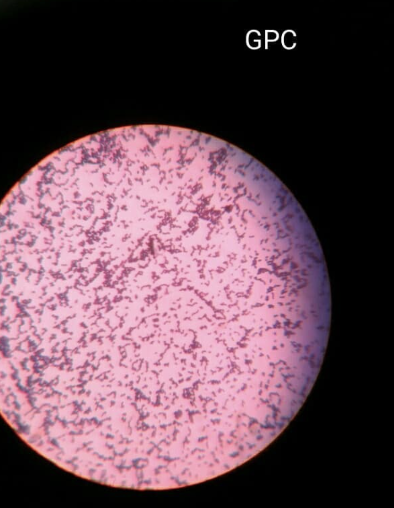

🏥 Clinical Informatics Intern — Alivia Care
- Worked on EHR-based reporting and clinical workflow optimization.
- Supported data accessibility and operational insight generation.
- Collaborated with informatics teams on healthcare data use cases.
Biotechnology • Health Informatics • AI Systems
Building data-driven healthcare solutions through clinical informatics, AI, biotechnology, and human-centered system design.
I am a Health Informatics graduate student with a strong academic foundation in Biotechnology, bringing an interdisciplinary perspective to healthcare innovation. My work lies at the intersection of clinical informatics, artificial intelligence, data science, and system design.
I enjoy building solutions that are technically strong, practical in real-world settings, and focused on improving healthcare workflows, accessibility, and patient outcomes.
Built a strong base in biological systems, healthcare fundamentals, laboratory methods, and applied scientific problem solving.
Expanded into bioinformatics, microbiology, analytics, and technical documentation through research and applied project work.
Transitioned into machine learning, automation, intelligent systems, and real-world data pipelines for structured decision-making.
Now focused on EHR workflows, healthcare data systems, AI-driven health solutions, and patient-centered digital transformation.



Developed an SVM model with 96.8% accuracy for tuberculosis inhibitor prediction using MATLAB and AutoDock.
Built a Flutter + Google Sheets based inventory system with tracking, updates, filtering, and business-oriented workflows.
.jpeg)
.jpeg)
.jpeg)
.jpeg)
.jpeg)

Built a web-based chatbot for respiratory health guidance using HTML, CSS, and Vue.js.


Created a biological and chemical lab calculation tool using HTML, CSS, and JavaScript, published on Google Play Store.
TensorFlow-based computer vision system for plant identification with voice feedback integration.
Built Python-based AI gameplay logic for Chess and Checkers to demonstrate algorithmic reasoning and decision-making.
Worked on genomic data structuring and research-focused bioinformatics database organization.


Access dissertation work and supporting academic documentation.